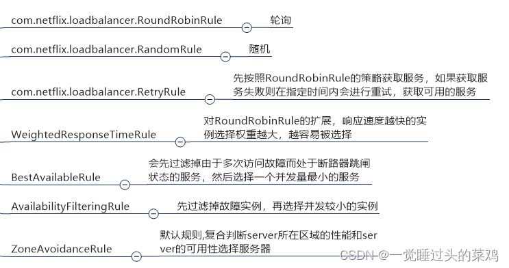

[toc]
前言
OpenFeign 全称 Spring Cloud OpenFeign，它是 Spring 官方推出的一种声明式服务调用与负载均衡组件，它的出现就是为了替代进入停更维护状态的 Feign。OpenFeign 是 Spring Cloud 对 Feign 的二次封装，它具有 Feign 的所有功能，并在 Feign 的基础上增加了对 Spring MVC 注解的支持，例如 @RequestMapping、@GetMapping 和 @PostMapping 等。
OpenFeign：Spring Cloud声明式服务调用组件（非常详细） (biancheng.net)
本文章基于openFeign 2.X
Feign 的启动原理
注入@Import
我们在使用OpenFegin时, 需要加@EnableFeignClients, 我们先看一下这个注解
@Retention(RetentionPolicy.RUNTIME)
@Target(ElementType.TYPE)
@Documented
@Import(FeignClientsRegistrar.class)
public @interface EnableFeignClients {...}
重点在第四个 @Import 上，一般使用此注解都是想要动态注册 Spring Bean 的
class FeignClientsRegistrar implements ImportBeanDefinitionRegistrar, ResourceLoaderAware, EnvironmentAware {
// .....
// 资源加载器，可以加载 classpath 下的所有文件
private ResourceLoader resourceLoader;
// 上下文，可通过该环境获取当前应用配置属性等
private Environment environment;
@Override
public void setEnvironment(Environment environment) {
this.environment = environment;
}
@Override
public void setResourceLoader(ResourceLoader resourceLoader) {
this.resourceLoader = resourceLoader;
}
@Override
public void registerBeanDefinitions(AnnotationMetadata metadata, BeanDefinitionRegistry registry) {
// 注册 ＠EnableFeignClients 提供的自定义配置类中的相关 Bean 实例
registerDefaultConfiguration(metadata,registry);
// 扫描 packge，注册被 @FeignClient 修饰的接口类为 IOC Bean
registerFeignClients(metadata, registry);
}
// .....
}
其中 ImportBeanDefinitionRegistrar 负责动态注入 IOC Bean，它有一个registerBeanDefinitions(), 用来做bean的注入具体逻辑,
FeignClientsRegistrar分别注入了 Feign 配置类、FeignClient Bean,
添加全局配置
registerDefaultConfiguration 方法流程如下
- 获取 @EnableFeignClients 注解上的属性以及对应 Value
- 生成 FeignClientSpecification（存储 Feign 中的配置类） 对应的构造器 BeanDefinitionBuilder
- FeignClientSpecification Bean 名称为 default. + @EnableFeignClients 修饰类全限定名称 + FeignClientSpecification
- @EnableFeignClients defaultConfiguration 默认为 {}，如果没有相关配置，默认使用 FeignClientsConfiguration 并结合 name 填充到 FeignClientSpecification，最终注册为 IOC Bean
注册 FeignClient 接口
将重点放在 registerFeignClients 上，该方法主要就是将修饰了 @FeignClient 的接口注册为 IOC Bean
扫描 @EnableFeignClients 注解，如果有 clients，则加载指定接口，为空则根据 scanner 规则扫描出修饰了 @FeignClient 的接口
获取 @FeignClient 上对应的属性，根据 configuration 属性去创建接口级的 FeignClientSpecification 配置类 IOC Bean
将 @FeignClient 的属性设置到 FeignClientFactoryBean 对象上，并注册 IOC Bean
@FengnClient 修饰的接口实际上使用了 Spring 的代理工厂生成代理类，所以这里会把修饰了 @FeignClient 接口的 BeanDefinition 设置为 FeignClientFactoryBean 类型，而 FeignClientFactoryBean 继承自 FactoryBean
也就是说，当我们定义 @FeignClient 修饰接口时，注册到 IOC 容器中 Bean 类型变成了 FeignClientFactoryBean
在 Spring 中，FactoryBean 是一个工厂 Bean，用来创建代理 Bean。工厂 Bean 是一种特殊的 Bean，对于需要获取 Bean 的消费者而言，它是不知道 Bean 是普通 Bean 或是工厂 Bean 的。工厂 Bean 返回的实例不是工厂 Bean 本身，而是会返回执行了工厂 Bean 中
FactoryBean#getObject逻辑的实例以后可以写一篇FactoryBean的文章
FeignClientFactoryBean
获得具体bean的方法
构造 feign.Builder对象
<T> T getTarget() {
FeignContext context = applicationContext.getBean(FeignContext.class);
// 拿到 Feign.Builder
Feign.Builder builder = feign(context);
if (!StringUtils.hasText(url)) {
if (!name.startsWith("http")) {
url = "http://" + name;
}
else {
url = name;
}
url += cleanPath();
// 通过负载拿到bean
return (T) loadBalance(builder, context,
new HardCodedTarget<>(type, name, url));
}
....// 省略代码
}
org.springframework.cloud.openfeign.FeignClientFactoryBean#feign
protected Feign.Builder feign(FeignContext context) {
FeignLoggerFactory loggerFactory = get(context, FeignLoggerFactory.class);
Logger logger = loggerFactory.create(type);
// 从context拿出 encoder , Decoder , Contract 对象
Feign.Builder builder = get(context, Feign.Builder.class)
// required values
.logger(logger)
.encoder(get(context, Encoder.class))
.decoder(get(context, Decoder.class))
.contract(get(context, Contract.class));
// 配置feign, 例如 超时、重试、404 配置, 错误Encode, 拦截器等等
configureFeign(context, builder);
return builder;
}
动态代理生成
org.springframework.cloud.openfeign.FeignClientFactoryBean#loadBalance

Client： Feign 发送请求以及接收响应等都是由 Client 完成，该类默认 Client.Default，另外支持 HttpClient、OkHttp 等客户端
然后进入org.springframework.cloud.openfeign.HystrixTargeter#target
然后构建了fegin对象 feign.Feign.Builder#target(feign.Target<T>)
public <T> T target(Target<T> target) {
return build().newInstance(target);
}
public Feign build() {
Client client = Capability.enrich(this.client, capabilities);
Retryer retryer = Capability.enrich(this.retryer, capabilities);
List<RequestInterceptor> requestInterceptors = this.requestInterceptors.stream()
.map(ri -> Capability.enrich(ri, capabilities))
.collect(Collectors.toList());
Logger logger = Capability.enrich(this.logger, capabilities);
Contract contract = Capability.enrich(this.contract, capabilities);
Options options = Capability.enrich(this.options, capabilities);
Encoder encoder = Capability.enrich(this.encoder, capabilities);
Decoder decoder = Capability.enrich(this.decoder, capabilities);
InvocationHandlerFactory invocationHandlerFactory =
Capability.enrich(this.invocationHandlerFactory, capabilities);
QueryMapEncoder queryMapEncoder = Capability.enrich(this.queryMapEncoder, capabilities);
SynchronousMethodHandler.Factory synchronousMethodHandlerFactory =
new SynchronousMethodHandler.Factory(client, retryer, requestInterceptors, logger,
logLevel, decode404, closeAfterDecode, propagationPolicy, forceDecoding);
ParseHandlersByName handlersByName =
new ParseHandlersByName(contract, options, encoder, decoder, queryMapEncoder,
errorDecoder, synchronousMethodHandlerFactory);
return new ReflectiveFeign(handlersByName, invocationHandlerFactory, queryMapEncoder);
}
}
生成代理类
feign.ReflectiveFeign#newInstance
newInstance 方法对 @FeignClient 修饰的接口中 SpringMvc 等配置进行解析转换，对接口类中的方法进行归类，生成动态代理类

根据 newInstance 方法按照行为大致划分，共做了四件事
- 处理 @FeignCLient 注解（SpringMvc 注解等）封装为 MethodHandler 包装类
- 遍历接口中所有方法，过滤 Object 方法，并将默认方法以及 FeignClient 方法分类, 并创建收集起来
- 创建动态代理对应的 InvocationHandler 并创建 Proxy 实例
- 接口内 default 方法 绑定动态代理类
MethodHandler 将方法参数、方法返回值、参数集合、请求类型、请求路径进行解析存储

在创建InvocationHandler时, 创建的其实现类是 feign.ReflectiveFeign.FeignInvocationHandler
InvocationHandler handler = factory.create(target, methodToHandler);
public interface InvocationHandlerFactory {
InvocationHandler create(Target target, Map<Method, MethodHandler> dispatch);
/**
* Like {@link InvocationHandler#invoke(Object, java.lang.reflect.Method, Object[])}, except for a
* single method.
*/
interface MethodHandler {
Object invoke(Object[] argv) throws Throwable;
}
static final class Default implements InvocationHandlerFactory {
@Override
public InvocationHandler create(Target target, Map<Method, MethodHandler> dispatch) {
return new ReflectiveFeign.FeignInvocationHandler(target, dispatch);
}
}
}
以上, 在项目启动时处理
以后补一篇jdk动态代理
在我们调用 @FeignClient 接口时，会被 FeignInvocationHandler#invoke 拦截，并在动态代理方法中执行下述逻辑
- 接口注解信息封装为 HTTP Request
- 通过 Ribbon 获取服务列表，并对服务列表进行负载均衡调用（服务名转换为 ip+port）
- 请求调用后，将返回的数据封装为 HTTP Response，继而转换为接口中的返回类型
feign.ReflectiveFeign.FeignInvocationHandler#invoke
@Override
public Object invoke(Object proxy, Method method, Object[] args) throws Throwable {
if ("equals".equals(method.getName())) {
try {
Object otherHandler = args.length > 0 && args[0] != null ? Proxy.getInvocationHandler(args[0]) : null;
return equals(otherHandler);
} catch (IllegalArgumentException e) {
return false;
}
} else if ("hashCode".equals(method.getName())) {
return hashCode();
} else if ("toString".equals(method.getName())) {
return toString();
}
// 这个dispatch 就是 methodToHandler 集合
// 其结构 : private final Map<Method, MethodHandler> dispatch;
return dispatch.get(method).invoke(args);
// 它反射的时候用的是Method类, 所以feign接口是允许重载的, mybatis的反射xml的接口不允许重载的
}
执行具体方法的invoke
feign.SynchronousMethodHandler#invoke
@Override
public Object invoke(Object[] argv) throws Throwable {
// 构建 Request 模版类
RequestTemplate template = buildTemplateFromArgs.create(argv);
// 存放连接、超时时间等配置类
Options options = findOptions(argv);
失败重试策略类
Retryer retryer = this.retryer.clone();
while (true) {
try {
// 执行
return executeAndDecode(template, options);
} catch (RetryableException e) {
try {
// 重试操作
retryer.continueOrPropagate(e);
} catch (RetryableException th) {
Throwable cause = th.getCause();
if (propagationPolicy == UNWRAP && cause != null) {
throw cause;
} else {
throw th;
}
}
if (logLevel != Logger.Level.NONE) {
logger.logRetry(metadata.configKey(), logLevel);
}
continue;
}
}
}
Object executeAndDecode(RequestTemplate template, Options options) throws Throwable {
Request request = targetRequest(template);
if (logLevel != Logger.Level.NONE) {
logger.logRequest(metadata.configKey(), logLevel, request);
}
Response response;
long start = System.nanoTime();
try {
// 执行
response = client.execute(request, options);
// ensure the request is set. TODO: remove in Feign 12
response = response.toBuilder()
.request(request)
.requestTemplate(template)
.build();
} catch (IOException e) {
if (logLevel != Logger.Level.NONE) {
logger.logIOException(metadata.configKey(), logLevel, e, elapsedTime(start));
}
throw errorExecuting(request, e);
}
long elapsedTime = TimeUnit.NANOSECONDS.toMillis(System.nanoTime() - start);
if (decoder != null)
// decode 责任链
return decoder.decode(response, metadata.returnType());
......// 省略代码
}
然后 org.springframework.cloud.openfeign.ribbon.LoadBalancerFeignClient#execute
然后 com.netflix.client.AbstractLoadBalancerAwareClient#executeWithLoadBalancer(S, com.netflix.client.config.IClientConfig)
执行远端调用逻辑中使用到了 Rxjava （响应式编程），可以看到通过底层获取 server 后将服务名称转变为 ip+port 的方式
public T executeWithLoadBalancer(final S request, final IClientConfig requestConfig) throws ClientException {
LoadBalancerCommand<T> command = buildLoadBalancerCommand(request, requestConfig);
try {
return command.submit(
// 这特么是个参数-----参数开始
new ServerOperation<T>() {
@Override
public Observable<T> call(Server server) {
// 拿到了具体的ip+port
URI finalUri = reconstructURIWithServer(server, request.getUri());
S requestForServer = (S) request.replaceUri(finalUri);
try {
return Observable.just(AbstractLoadBalancerAwareClient.this.execute(requestForServer, requestConfig));
}
catch (Exception e) {
return Observable.error(e);
}
}
})// 参数结束
.toBlocking()
.single();
} catch (Exception e) {
Throwable t = e.getCause();
if (t instanceof ClientException) {
throw (ClientException) t;
} else {
throw new ClientException(e);
}
}
}
public Observable<T> submit(final ServerOperation<T> operation) {} submit方法有个入参, 就是那一大坨
网络调用默认使用 JDK 的 HttpURLConnection，可以配置使用 HttpClient 或者 OkHttp

具体怎么拿到ip和port的, 就是接下来的负责均衡知识了
Feign 如何负载均衡
一般而言，我们生产者注册多个服务，消费者调用时需要使用负载均衡从中 轮询机制选取一个健康并且可用的生产者服务
默认是轮询机制, 可以修改
openFegin 2.X 才有负载均衡 , 3.0 之后就移除了Ribbon, 一般用
spring-cloud-starter-loadbalancer代替

com.netflix.loadbalancer.reactive.LoadBalancerCommand#selectServer
因为 Feign 内部集成 Ribbon，所以也支持此特性，一起看下它是怎么做的

getServerFromLoadBalancer()
public Server getServerFromLoadBalancer(@Nullable URI original, @Nullable Object loadBalancerKey) throws ClientException {
String host = null;
int port = -1;
if (original != null) {
host = original.getHost();
}
if (original != null) {
Pair<String, Integer> schemeAndPort = deriveSchemeAndPortFromPartialUri(original);
port = schemeAndPort.second();
}
// Various Supported Cases
// The loadbalancer to use and the instances it has is based on how it was registered
// In each of these cases, the client might come in using Full Url or Partial URL
ILoadBalancer lb = getLoadBalancer();
if (host == null) {
// Partial URI or no URI Case
// well we have to just get the right instances from lb - or we fall back
if (lb != null){
// 选择出合适的服务
Server svc = lb.chooseServer(loadBalancerKey);
if (svc == null){
throw new ClientException(ClientException.ErrorType.GENERAL,
"Load balancer does not have available server for client: "
+ clientName);
}
host = svc.getHost();
if (host == null){
throw new ClientException(ClientException.ErrorType.GENERAL,
"Invalid Server for :" + svc);
}
logger.debug("{} using LB returned Server: {} for request {}", new Object[]{clientName, svc, original});
return svc;
}
......// 省略代码
进入按空间位置获取服务
com.netflix.loadbalancer.ZoneAwareLoadBalancer#chooseServer
/**
* 最终都是使用父级的 chooseServer()
* 如果有多个区域, 就随机选一个
*/
public Server chooseServer(Object key) {
// 如果只有一个区域直接使用父级的
if (!ENABLED.get() || getLoadBalancerStats().getAvailableZones().size() <= 1) {
logger.debug("Zone aware logic disabled or there is only one zone");
return super.chooseServer(key);
}
Server server = null;
try {
LoadBalancerStats lbStats = getLoadBalancerStats();
Map<String, ZoneSnapshot> zoneSnapshot = ZoneAvoidanceRule.createSnapshot(lbStats);
logger.debug("Zone snapshots: {}", zoneSnapshot);
if (triggeringLoad == null) {
triggeringLoad = DynamicPropertyFactory.getInstance().getDoubleProperty(
"ZoneAwareNIWSDiscoveryLoadBalancer." + this.getName() + ".triggeringLoadPerServerThreshold", 0.2d);
}
if (triggeringBlackoutPercentage == null) {
triggeringBlackoutPercentage = DynamicPropertyFactory.getInstance().getDoubleProperty(
"ZoneAwareNIWSDiscoveryLoadBalancer." + this.getName() + ".avoidZoneWithBlackoutPercetage", 0.99999d);
}
// 拿到可用的区域列表
Set<String> availableZones = ZoneAvoidanceRule.getAvailableZones(zoneSnapshot, triggeringLoad.get(), triggeringBlackoutPercentage.get());
logger.debug("Available zones: {}", availableZones);
if (availableZones != null && availableZones.size() < zoneSnapshot.keySet().size()) {
// 随机算一个区域
String zone = ZoneAvoidanceRule.randomChooseZone(zoneSnapshot, availableZones);
logger.debug("Zone chosen: {}", zone);
if (zone != null) {
// 拿到具体的负载均衡规则
BaseLoadBalancer zoneLoadBalancer = getLoadBalancer(zone);
// 根据规则获取服务信息
server = zoneLoadBalancer.chooseServer(key);
}
}
} catch (Exception e) {
logger.error("Error choosing server using zone aware logic for load balancer={}", name, e);
}
if (server != null) {
return server;
} else {
logger.debug("Zone avoidance logic is not invoked.");
return super.chooseServer(key);
}
可用的判断包括 是否有存活节点; 熔断次数不能太多等等
拿到负载均衡对象
com.netflix.loadbalancer.ZoneAwareLoadBalancer#getLoadBalancer
BaseLoadBalancer getLoadBalancer(String zone) {
zone = zone.toLowerCase();
BaseLoadBalancer loadBalancer = balancers.get(zone);
if (loadBalancer == null) {
// We need to create rule object for load balancer for each zone
// 拿到具体的规则 , 默认是轮询
IRule rule = cloneRule(this.getRule());
loadBalancer = new BaseLoadBalancer(this.getName() + "_" + zone, rule, this.getLoadBalancerStats());
BaseLoadBalancer prev = balancers.putIfAbsent(zone, loadBalancer);
if (prev != null) {
loadBalancer = prev;
}
}
return loadBalancer;
}
com.netflix.loadbalancer.BaseLoadBalancer#getRule
private final static IRule DEFAULT_RULE = new RoundRobinRule();
protected IRule rule = DEFAULT_RULE;
public IRule getRule() {
return rule;
}
拿到规则后, 调用chooseServer()
com.netflix.loadbalancer.BaseLoadBalancer#chooseServer
调用了其下实现类
com.netflix.loadbalancer.RoundRobinRule#choose(com.netflix.loadbalancer.ILoadBalancer, java.lang.Object)
public Server choose(ILoadBalancer lb, Object key) {
if (lb == null) {
log.warn("no load balancer");
return null;
}
Server server = null;
int count = 0;
while (server == null && count++ < 10) {
List<Server> reachableServers = lb.getReachableServers();
// 所有服务的ip + port
List<Server> allServers = lb.getAllServers();
int upCount = reachableServers.size();
int serverCount = allServers.size();
if ((upCount == 0) || (serverCount == 0)) {
log.warn("No up servers available from load balancer: " + lb);
return null;
}
// 下一个服务的下标
int nextServerIndex = incrementAndGetModulo(serverCount);
server = allServers.get(nextServerIndex);
if (server == null) {
/* Transient. */
Thread.yield();
continue;
}
if (server.isAlive() && (server.isReadyToServe())) {
return (server);
}
// Next.
server = null;
}
if (count >= 10) {
log.warn("No available alive servers after 10 tries from load balancer: "
+ lb);
}
return server;
}
com.netflix.loadbalancer.RoundRobinRule#incrementAndGetModulo
private int incrementAndGetModulo(int modulo) {
for (;;) {
// AtomicInteger nextServerCyclicCounter = nextServerCyclicCounter = new AtomicInteger(0); 类初始化时 初始化了变量
int current = nextServerCyclicCounter.get();
int next = (current + 1) % modulo;
if (nextServerCyclicCounter.compareAndSet(current, next))
return next;
}
}
日志配置
3、openFeign日志配置_搞钱自律的博客-CSDN博客_openfeign日志
注意: feign调试日志是debug级别输出,springboot默认的日志级别是info，所以要调节springboot的日志级别(可以指定目录的调节)
使用okHttp
Feign、httpclient、OkHttp3 结合使用 - 疯狂创客圈 - 博客园 (cnblogs.com)
修改负载均衡策略
OpenFeign修改负载均衡策略_一觉睡过头的菜鸡的博客-CSDN博客_openfeign负载均衡

掌握 SpringCloud OpenFeign 核心原理 - 知乎 (zhihu.com)
推荐文章: